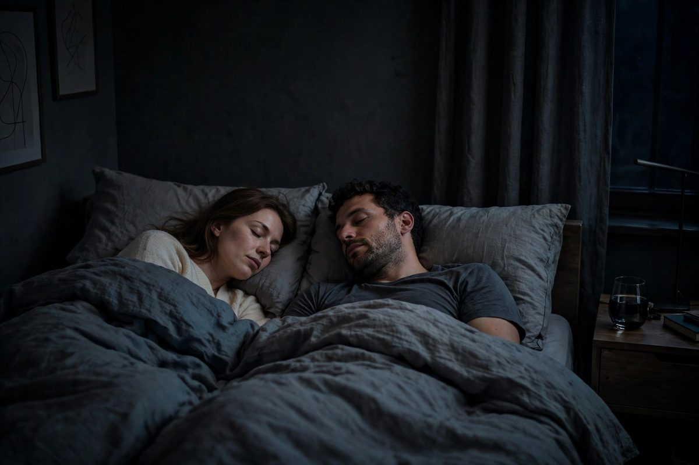

How Much Sleep Do Adults Need?
The 7 to 9 hour guideline, why it varies, and how to tell how much sleep you personally need.
Most adults need 7 to 9 hours of sleep a night, according to the guidance of sleep researchers and health bodies. That range is wide because people differ: some function well on 7 hours, others need 9, and a few need slightly more or less. The question that matters is not the average but your own number, and there is a simple way to find it. This guide explains the guideline, the variation, and how to discover your own need.
Where the 7 to 9 hour range comes from
The range comes from large studies that link sleep duration with health, mood, performance and longevity. People who regularly sleep less than 7 hours have higher risks of obesity, diabetes, heart disease and depression, and they perform worse on attention and memory tests. People who regularly sleep much more than 9 hours also show higher risks, though that may reflect underlying health problems rather than the sleep itself. Seven to nine hours is the range where the risks are lowest for most adults, and it is the range most sleep organisations recommend.
Why people differ
Sleep need is partly genetic: some people are naturally short sleepers and some are naturally long sleepers, and the difference is real, not a matter of willpower. Age matters too: sleep need falls slightly with age, though older adults often sleep less well rather than needing less. Activity, illness, stress and pregnancy all raise sleep need temporarily. Women tend to need slightly more sleep than men on average, though the overlap is large. Your own need is the amount that leaves you alert through the day without caffeine or naps.
How to find your own number
The simplest test is a holiday test: for a week, go to bed at the same time each night, keep no alarm, and note when you wake naturally and how long you slept. After the first few nights, when you catch up on any backlog, the amount settles to your natural need. Most people land between 7 and 9 hours. If you consistently need more than 9 hours and still feel tired, or you cannot stay awake during the day, see a doctor, because it can signal a sleep disorder.
Signs you are not getting enough
Needing an alarm to wake, feeling groggy for more than half an hour, needing caffeine to function, falling asleep in the daytime, and feeling irritable or forgetful are all signs of insufficient sleep. Many people live with these signs for years and assume they are normal, because they have forgotten what a well-rested day feels like. A week of full nights is often a revelation: mood, memory and energy all improve, and the difference is the evidence that the old amount was not enough.
Can you catch up on sleep
You can repay a short-term debt by sleeping longer for a few nights, and the body does recover. But a long-term pattern of short nights followed by long lie-ins at the weekend does not fully restore performance, and it disrupts the body clock, making Monday harder. The better approach is a consistent schedule: the same bedtime and wake time every day, within an hour, including weekends. Consistency protects the body clock, and a protected clock makes falling asleep and waking up easier.
Finding your number in a week
Use a holiday or a quiet week to find your number. Go to bed at the same time each night, keep no alarm, and note when you wake naturally and how long you slept. The first two nights are unreliable, because you are repaying a backlog, but by night four or five the amount settles. Suppose you sleep 8 hours 20 minutes, 8 hours 5 minutes, and 8 hours 15 minutes on three settled nights: your natural need is about 8 hours and 10 minutes. That is your target, and you can work backwards from your wake time to find the bedtime that gives it. Repeat the test once a year, because the number changes slowly with age and with your life.
Frequently Asked Questions
How much sleep do adults need?
Most adults need 7 to 9 hours a night. Some need slightly less, some slightly more, and the right amount leaves you alert without caffeine.
Can I catch up on sleep at the weekend?
Partly, for a short-term debt. But a regular pattern of short nights and long lie-ins disrupts the body clock and does not fully restore performance.
What if I sleep 9 hours and still feel tired?
See a doctor. Persistent tiredness despite a full night can signal a sleep disorder such as sleep apnoea, or another health issue.